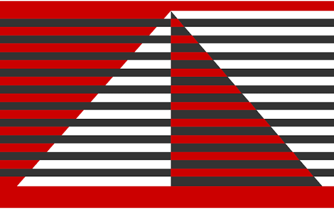

I am a Ph.D. scholar at IIT Bombay, working with Prof. Biswabandan Panda. I am broadly interested in computing systems
architecture for high performance. Specifically, I work on optimizing the memory hierarchy and designing highly efficient, scalable
memory subsystems for many-core systems. My research
interest lies in replacement policies, interconnect designs, prefetchers, hardware-software
co-design, and off-chip predictors. My research contributions have been recognized with the Winifred
B. Fernandes Award for excellence in Ph.D. research progress and the Distinguished Poster Award at
ACM India ARCS 2026 for my work on Drishti.
I'm always happy to chat about research or potential collaborations. Feel free to say hi!
Worked with the Google hardware team to optimize the on-chip interconnect design for
Next-Generation Tensor Processing Units (TPUs).
News:
Feb 2026
Drishti, recognized among distinguished Posters at ACM India ARCS
2026
Oct 2025
Drishti, nominated as one of the best paper candidates at MICRO
2025.
Sep 2025
Received the Winifred B. Fernandes Award for excellence in PhD
research progress.🙏
July 2025
🥳 My first work "Drishti: Do Not Forget Slicing While
Designing Last-Level Cache Replacement Policies for Many-Core Systems" has been
accepted at the 58th IEEE/ACM International Symposium on Microarchitecture (MICRO'25)
April 2025
Submitted my first work at 58th IEEE/ACM International Symposium
on Microarchitecture (MICRO'25)
Professional Service
2026 - Present
Reviewer
IEEE Computer Architecture Letters
(CAL)
2026
Student Reviewer
ACM/IEEE International Symposium on
Microarchitecture (MICRO 2026)
2026

Artifact Evaluation Committee
ACM/IEEE International Symposium on Computer
Architecture (ISCA 2026)
Teaching Assistantship
Computer Science and Engineering,
IIT Bombay
July 2026 - Present
CS231: Digital Logic + Computer Architecture
Lab Prof. Biswabandan PandaCS230: Digital Logic Design + Computer
Architecture Prof. Sayandeep Saha
Jan 2026 - Apr 2026
CS794: Systems for Machine Learning Prof. Mythili Vutukuru
Jun 2025 - Dec 2025
CS231: Digital Logic + Computer Architecture
Lab Prof. Biswabandan PandaCS230: Digital Logic Design + Computer
Architecture Prof. Sayandeep Saha
Jan 2025 - Jun 2025
CS899: Communication Skills Prof. Varsha Apte
Aug 2024 - Dec 2024
CS101: Computer Programming and Utilization Prof. Manoj Prabhakaran
Co-authored with Prerna
Priyadarshini and Prof. Biswabandan Panda
Modern many-core systems organize the Last-Level Cache (LLC) into multiple slices, yet
state-of-the-art replacement policies often treat the LLC as a monolithic entity. This oversight
leads to localized learning inaccuracies and biased sample sets when applied to distributed
cache slices. In this work, we propose Drishti, a novel cache management logic
that explicitly incorporates slicing to effectively handle the distributed nature of the LLC. By
introducing a per-core global reuse predictor combined with a local (per-slice) sampled cache,
Drishti overcomes the limitations of centralized sample sets and significantly improves overall
cache performance.
Implemented VM migration using Linux with qemu+kvm, utilizing shared storage for VM images.
Conducted a performance characterization study to empirically address questions related to
workloads, setups, performance and cost metrics, and various configuration parameters.